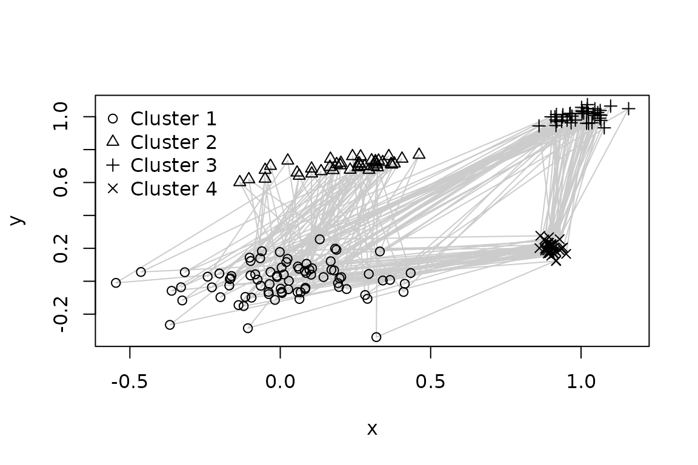
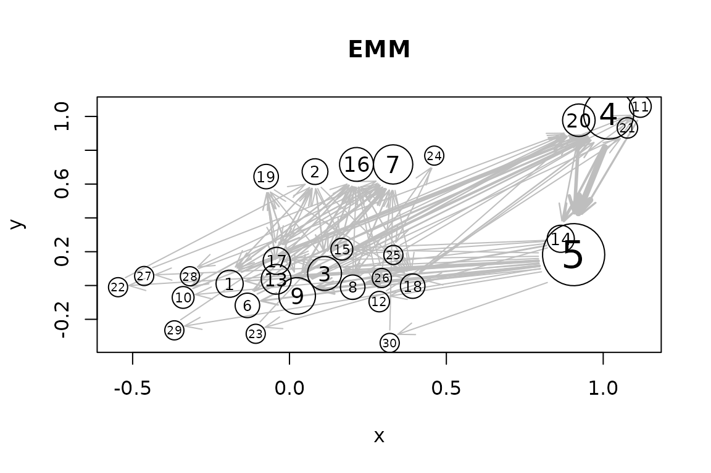
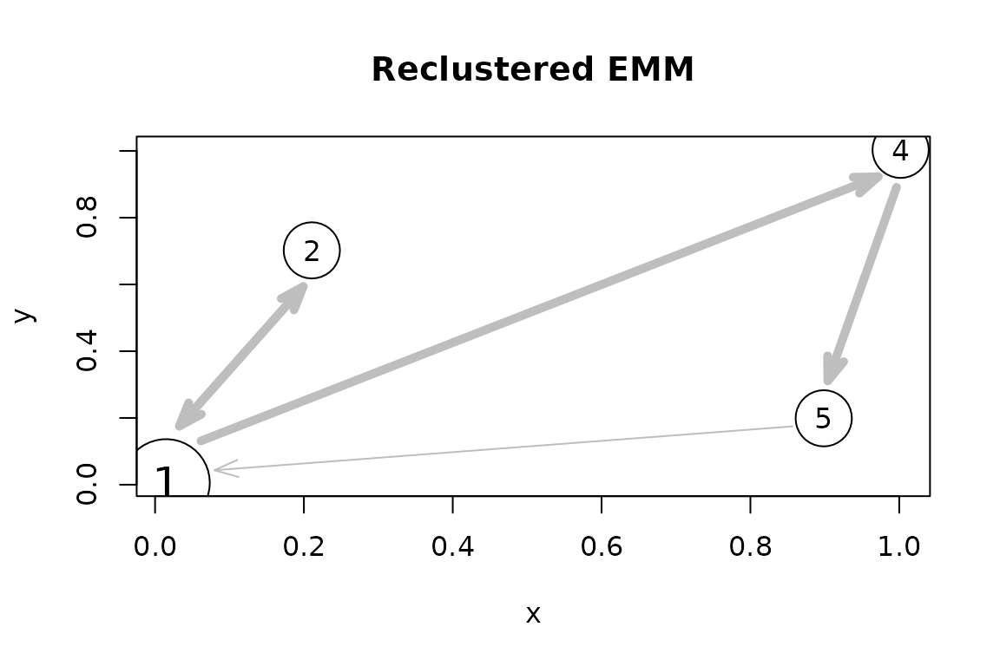

Introduction
Traditional data stream clustering algorithms efficiently group massive real-time data points into clusters but typically disregard the chronological or temporal order in which those points arrive. TRACDS (Hahsler and Dunham 2011) fixes this by superimposing a dynamically adapting Markov chain onto data stream clustering. As a data stream is processed and partitioned into clusters, the transitions between clusters over time are captured. The states of the Markov chain represent the clusters, and the edges capture the probability of moving from one cluster to another over time.
A specific implementation is the Extensible Markov Model (EMM) (Dunham et al. 2004), which combines threshold
nearest neighbor clustering with a Markov chain. The package
rEMM implements EMMs and also the general TRACDS framework
that can add temporal structure learning on top of any data stream
clustering algorithm. An interface for the algorithms in the stream
package (Hahsler et al. 2017) is
provided.
This guide demonstrates how to build a model from an ordered sequence, inspect its clusters and transitions, score new sequences, and predict a future state.
Prepare an ordered sequence
Use a numeric matrix or data frame with one observation per row and one feature per column. Rows must be in sequence order because EMM learns transitions between consecutive rows. Choose feature scales and a distance measure that reflect similarity in your application; for Euclidean distance, features with larger scales can dominate the clustering.
The included EMMsim data contain observations from four
clusters in two dimensions. The training sequence repeats the pattern
1, 2, 1, 3, 4 forty times, giving 200 observations. A
separate test sequence contains 25 observations generated using the same
pattern.
data("EMMsim")
dim(EMMsim_train)
#> [1] 200 2
head(EMMsim_train)
#> x y
#> [1,] -0.24141315 0.02774292
#> [2,] 0.02493457 0.73318465
#> [3,] 0.08582494 0.05060559
#> [4,] 1.02457305 1.02224008
#> [5,] 0.88936846 0.16892761
#> [6,] -0.09543854 -0.09983864
head(EMMsim_sequence_train, 10)
#> [1] 1 2 1 3 4 1 2 1 3 4We can visualize the training dataset as points where the different
symbols identify the generating clusters. The grey lines show the order
of observations. These cluster labels are supplied for illustration; the
model uses only the coordinates in EMMsim_train and needs
to learn the clusters and temporal relationship between them.
plot(EMMsim_train, type = "n", xlab = "x", ylab = "y")
lines(EMMsim_train, col = "gray80")
points(EMMsim_train, pch = EMMsim_sequence_train)
legend("topleft", legend = paste("Cluster", 1:4), pch = 1:4, bty = "n")
Build and inspect an EMM
EMM() creates an empty model. build()
processes observations in row order, assigns them to clusters, and
records transitions between states. For the threshold nearest neighbor
clustering approach (tNN), a new observation joins the
closest cluster when its distance is below the clustering threshold;
otherwise, it creates a new cluster. A detailed description of how the
model is created can be found in Hahsler and
Dunham (2011).
emm <- EMM(threshold = 0.1, measure = "euclidean")
build(emm, EMMsim_train)
emm
#> EMM with 30 states/clusters.
#> Measure: euclidean
#> Threshold: 0.1
#> Centroid: TRUE
#> Lambda: 0The threshold controls the level of detail in the clustering. Smaller values generally produce more clusters, while larger values group more observations together. Here, the small threshold creates micro-clusters within the four generating clusters. The threshold is expressed in the units of the chosen distance measure and should be chosen for the scale of your data.
size() returns the number of clusters,
cluster_centers() returns their representative coordinates,
and cluster_counts() reports how many observations have
been assigned to each cluster. last_clustering() retains
the cluster assignments of data points from the most recent
build() call.
size(emm)
#> [1] 30
head(cluster_centers(emm))
#> x y
#> 1 -0.19083331 0.01050197
#> 2 0.08133044 0.67363610
#> 3 0.11179032 0.07133282
#> 4 1.01746868 1.01392472
#> 5 0.90573527 0.18247363
#> 6 -0.13412975 -0.11755345
head(sort(cluster_counts(emm), decreasing = TRUE))
#> 5 4 7 9 3 16
#> 33 24 16 14 12 12
head(last_clustering(emm), 10)
#> [1] "1" "2" "3" "4" "5" "6" "7" "8" "4" "5"The cluster labels are just identifiers and do not need to match the labels used to generate the example data.
We can visualize the learned model. The MDS method places clusters at the locations of their centers. For higher-dimensional data, it uses a 2D multidimensional scaling projection.
plot(emm, method = "MDS", main = "EMM")
We see that the clustering broke the 4 clusters each into several micro-clusters which is common for data stream clustering algorithms. The grey arrows show that it learned the general order.
Simplifying the model
When a data stream clustering model has many micro-clusters, reclustering can give a more compact view. In this example, we know there are four generating clusters, so we merge the micro-clusters into four groups using hierarchical clustering. For other data, choose the number of groups using domain knowledge or validation on separate sequences.
emm4 <- recluster_hclust(emm, k = 4, method = "average")
emm4
#> EMM with 4 states/clusters.
#> Measure: euclidean
#> Threshold: 0.1
#> Centroid: TRUE
#> Lambda: 0
cluster_centers(emm4)
#> x y
#> 1 0.01474468 0.005505117
#> 2 0.21061897 0.702117888
#> 4 1.00185325 1.003273546
#> 5 0.89855119 0.198899869
cluster_counts(emm4)
#> 1 2 4 5
#> 80 40 40 40recluster_hclust() merges both the clusters and their
transition information. The reclustered model
plot(emm4, method = "MDS", main = "Reclustered EMM")
The reclustered model perfectly learned the temporal structure of the cluster order: bottom-left, top-left, bottom-left, top-right, bottom-right. This holds for this simple data set. Remember, cluster labels are identifiers and do not need to agree with the labels in the original data set.Transition matrices have source states in rows and destination states
in columns. Transition probabilities are based on those counts. The
default prior = TRUE to smooth counts by adding one to
every transition count before calculating probabilities, which gives
more stable results for low counts. Here, we show the transition
probabilities without count smoothing.
transition_matrix(emm4, prior = FALSE)
#> 1 2 4 5
#> 1 0 0.5 0.5 0
#> 2 1 0.0 0.0 0
#> 4 0 0.0 0.0 1
#> 5 1 0.0 0.0 0Score a new sequence
score() measures how well a new sequence of data points
agrees with the learned model. Points are assigned to existing clusters,
and the transitions are scored.
Here, we use method = "product", which multiplies the
transition probabilities along the path taken by the new data. The score
is rescaled to a probability by accounting for the path length.
set.seed(1234)
test_shuffled <- EMMsim_test[sample(nrow(EMMsim_test)), , drop = FALSE]
c(
ordered = score(emm4, EMMsim_test,
method = "product", match_cluster = "nn", prior = TRUE),
shuffled = score(emm4, test_shuffled,
method = "product", match_cluster = "nn", prior = TRUE)
)
#> ordered shuffled
#> 0.71153590 0.06166211We see that the original test sequence matches the model well with a very high probability, while the shuffled sequence, whose temporal structure was destroyed, has a probability close to 0.
Predict a future state
Given a current state, predict() returns a future state
or a probability distribution over states. Here we request the
distribution 2 steps ahead from the state with label
"1".
predict(emm4, current_state = "1", n = 2,
probabilities = TRUE, prior = TRUE)
#> 1 2 4 5
#> 0.47712501 0.02827366 0.02827366 0.46632767We see that states 1 and 5 are more likely then the others.
Add observations incrementally
For performance reasons, EMM objects are implemented as mutable
objects using the S4 class system. build() therefore
changes an EMM in place and to create a copy the copy()
function has to be explicitly called. For additional batches from the
same sequence, call build() again and the model records the
transition from the previous batch’s last state to the next batch’s
first state. For an independent sequence, call reset()
first to avoid creating a transition between unrelated sequences.
reset() clears the current state while retaining the
learned clusters and counts.
Next, we make a copy of the current EMM, start a new sequence and add more data.
emm_updated <- copy(emm)
reset(emm_updated)
build(emm_updated, EMMsim_test)
c(
original_observations = sum(cluster_counts(emm)),
updated_observations = sum(cluster_counts(emm_updated))
)
#> original_observations updated_observations
#> 200 225For streams whose behavior changes over time, the lambda
argument for EMM() enables fading so older observations and
transitions have less influence. The default lambda = 0
retains their full weight. See fade() and
prune() for fading and removal of rare states or
transitions.
Next steps
DSC_EMM() and DSC_tNN() interfaces let you
use these algorithms as stream::DSC() clusterers with the
stream
package. See Adding temporal structure modeling to
stream clustering for examples using clusterers from
stream.
For standard clustering methods such as k-means, see Adding temporal structure modeling to standard
clustering, which demonstrates the TRAC()
interface.
For the model’s background and further applications, see the original paper vignette and Hahsler and Dunham (2010).